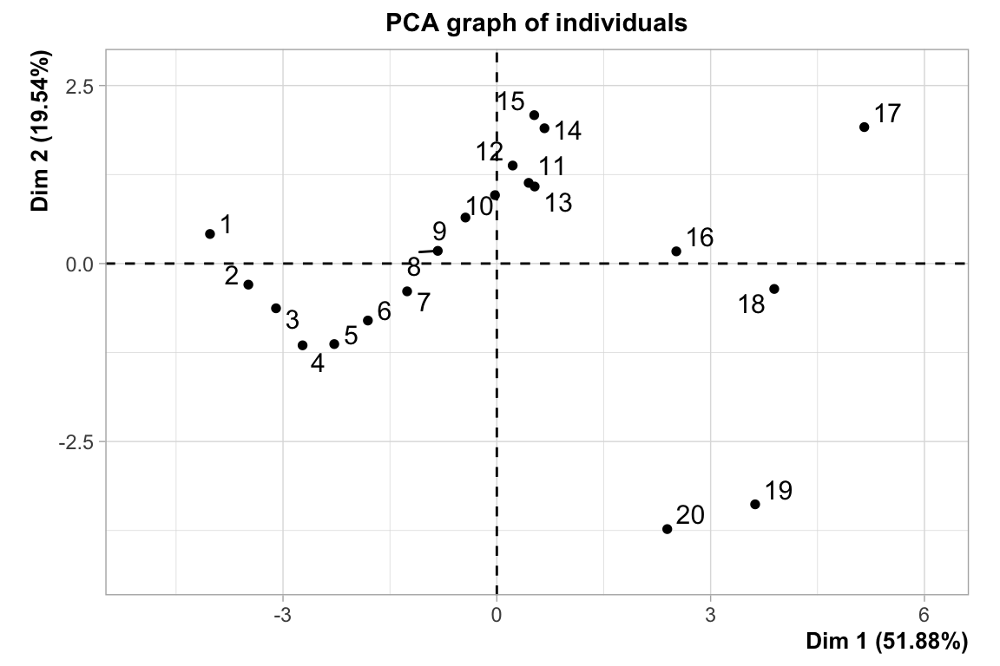

E PCA and Big Data
In this course it is possible that you will want to run a clustering or PCA analysis on a data set with hundreds of thousands of observations (like NY_trees, for example). This is not always straightforward, since looking at a dendrogram or a scatter plot with hundreds of thousands of points is not always fruitful. Consider the meteorological dataset below.
mdata <- read_csv("https://thebustalab.github.io/R_For_Chemists/sample_data/meteorological_data.csv")
dim(mdata)
## [1] 234528 15Nearly a quarter million observations! However, that does not mean that you cannot use those analyses on such a dataset. Consider just running the PCA or cluster analysis on a summary of the dataset. You can even create your own groups by which to summarize directly from large continuous variables in your dataset. In the example below, a new categorical variable WIND_GROUP is created by binning the observations according to WINDSPEED into 20 groups. This is accomplished using the cut() command.
mdata <- mdata[!is.na(mdata$WINDSPEED),]
mdata$WIND_GROUP <- as.numeric(cut(mdata$WINDSPEED, breaks = 20))Cool! Now we can group_by() and summarize() on WIND_GROUP:
mdata_windgroup <- group_by(mdata, WIND_GROUP) %>%
summarize(
TEMPERATURE = mean(TEMPERATURE, na.rm = TRUE),
TEMPERATURE_DELTA = mean(TEMPERATURE_DELTA, na.rm = TRUE),
RELATIVE_HUMIDITY = mean(RELATIVE_HUMIDITY, na.rm = TRUE),
SOLAR_RADIATION = mean(SOLAR_RADIATION, na.rm = TRUE),
OZONE = mean(OZONE, na.rm = TRUE),
PRECIPITATION = mean(PRECIPITATION, na.rm = TRUE),
WINDSPEED = mean(WINDSPEED, na.rm = TRUE),
SHELTER_TEMPERATURE = mean(SHELTER_TEMPERATURE, na.rm = TRUE),
WIND_DIRECTION = mean(WIND_DIRECTION, na.rm = TRUE),
WINDSPEED_SCALAR = mean(WINDSPEED_SCALAR, na.rm = TRUE),
FLOW_RATE = mean(FLOW_RATE, na.rm = TRUE),
WETNESS = mean(WETNESS, na.rm = TRUE),
)
## `summarise()` ungrouping output (override with `.groups` argument)
mdata_windgroup
## # A tibble: 20 x 13
## WIND_GROUP TEMPERATURE TEMPERATURE_DEL… RELATIVE_HUMIDI… SOLAR_RADIATION
## <dbl> <dbl> <dbl> <dbl> <dbl>
## 1 1 6.05 0.251 75.6 138.
## 2 2 4.72 0.124 75.2 143.
## 3 3 4.35 0.146 74.1 131.
## 4 4 4.09 0.175 74.5 118.
## 5 5 3.22 0.103 74.0 113.
## 6 6 3.28 0.0127 73.1 120.
## 7 7 4.10 -0.0685 72.0 138.
## 8 8 4.76 -0.137 70.5 155.
## 9 9 5.16 -0.180 69.0 167.
## 10 10 5.71 -0.199 67.0 184.
## 11 11 6.15 -0.222 64.9 199.
## 12 12 6.32 -0.176 65.9 184.
## 13 13 6.07 -0.176 65.6 181.
## 14 14 7.63 -0.168 66.2 169.
## 15 15 8.57 -0.132 67.6 176.
## 16 16 6.14 -0.193 66.8 218.
## 17 17 12.7 -0.3 51.1 420.
## 18 18 8.23 NaN 47.3 520.
## 19 19 -1.9 0 70 3
## 20 20 -5.9 NaN 60 249
## # … with 8 more variables: OZONE <dbl>, PRECIPITATION <dbl>, WINDSPEED <dbl>,
## # SHELTER_TEMPERATURE <dbl>, WIND_DIRECTION <dbl>, WINDSPEED_SCALAR <dbl>,
## # FLOW_RATE <dbl>, WETNESS <dbl>With that done, we can run matrix analyses on the summarized data, using our new WIND_GROUP variable as the sample ID, and plot the results!
mdata_windgroup_analyzed <- runMatrixAnalysis(
data = mdata_windgroup,
analysis = c("pca"),
column_w_names_of_multiple_analytes = NULL,
column_w_values_for_multiple_analytes = NULL,
columns_w_values_for_single_analyte = c("TEMPERATURE", "TEMPERATURE_DELTA", "RELATIVE_HUMIDITY", "SOLAR_RADIATION", "OZONE", "PRECIPITATION", "WINDSPEED", "SHELTER_TEMPERATURE", "WIND_DIRECTION", "WINDSPEED_SCALAR", "FLOW_RATE", "WETNESS"),
columns_w_additional_analyte_info = NULL,
columns_w_sample_ID_info = c("WIND_GROUP")
)
## Not replacing any NAs in your data set
ggplot(mdata_windgroup_analyzed) +
geom_point(aes(x = Dim.1, y = Dim.2, fill = WINDSPEED, size = TEMPERATURE), shape = 21) +
theme_classic()